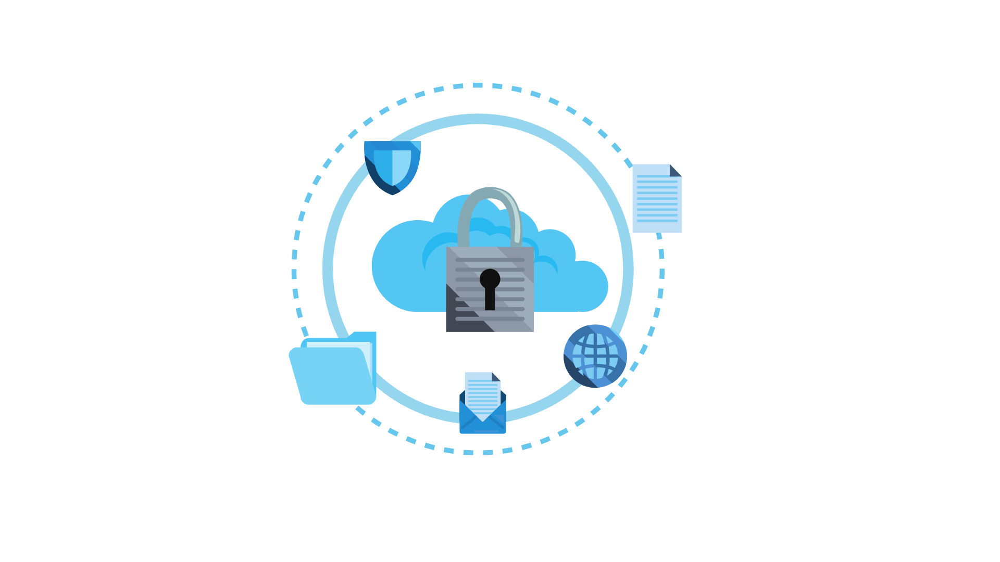

A Lei Geral da Proteção de Dados – LGPD, Lei n° 13.709/2018, foi criada
para proteger os dados pessoais e privacidade de cada indivíduo. A lei
detalha sobre qual a melhor forma de tratar os dados pessoais, e como as
empresas devem se comportar, seja no meio físico ou digital.
A LGPD segue os princípios da GDPR – General Data Protection Regulation
ou Regulamento Geral sobre a Proteção de Dados, uma lei da união europeia
que inclui normas sobre proteção de dados. O projeto considera a proteção
de dados pessoais um direto dos cidadãos, e em função disso muitas
empresas brasileiras que trabalhavam com empresas do exterior precisaram
se adequar para atender essas exigências e conseguirem trabalhar.
A LGPD aborda os papéis e responsabilidades daqueles que cuidarão dos
dados, e inclui os tópicos como:
Entre outros temas como qualidade dos dados, transparência, prevenção, não discriminação, responsabilização e prestação de contas. É de direito dos titulares dos dados confirmar, acessar, corrigir, opor-se, pedir anonimização, bloqueio ou eliminação dos seus dados. E todas essas regras da lei são fiscalizadas pela Autoridade Nacional de Proteção de Dados – ANPD, que também aplicará as multas quando necessário as empresas. As multas podem chegar a R$ 50 milhões por infração.
Primeiramente, precisamos compreender um pouco sobre a diferença de dado e informação. Um dado sozinho pode não significar muita coisa, pois pode ser só um número ou uma palavra. Mas quando tratados e associados, os dados se tornam informações, e essas são, atualmente, um dos bens mais preciosos da empresa, e elas só estão protegidas se estiverem ligadas a uma pessoa. Por exemplo, um e-mail sozinho não é capaz de identificar um indivíduo, mas quando associado a um perfil da rede social, fotos e outros dados, podem identificar o indivíduo, então todas as essas informações passam a ser dados pessoais. A LGPD não regula o uso particular de informações (listas de contatos no celular), o jornalismo (jornais, revistas, blogs, e afins), a arte (qualquer forma de expressão artística), os estudos acadêmicos ou aspectos de segurança pública, porém ela discrimina quais os tipos de dados devem ser tratados, sendo estes:
Por ser muito recente, os impactos da implementação da lei ainda estão surgindo e sendo analisados. A lei atinge a vida de todos, principalmente as empresas e profissionais de tecnologia que precisarão se adequar para cumprir a lei, trabalhando de maneira mais segura e consciente. Em suma, apesar da demora de surgir esse tipo de regulamentação no país, a LGPD é muito importante e afeta a vida de todos os brasileiros, profissionais e empresas, que terão o dever de proteger corretamente os dados e informações de seus clientes, respeitando-os.